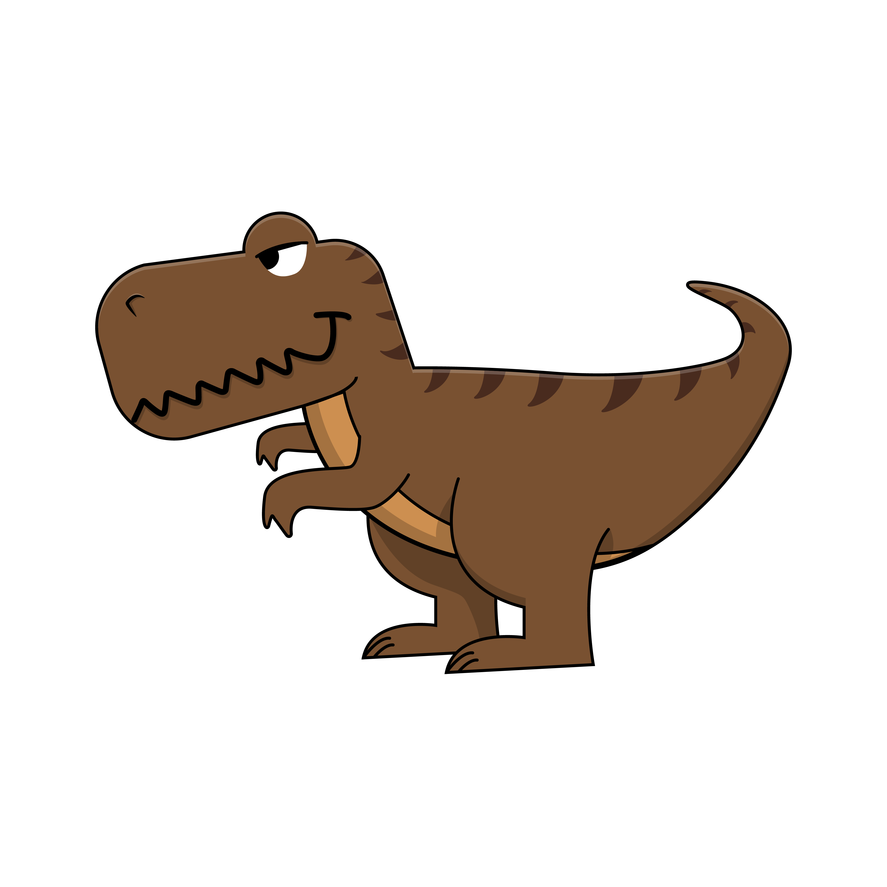
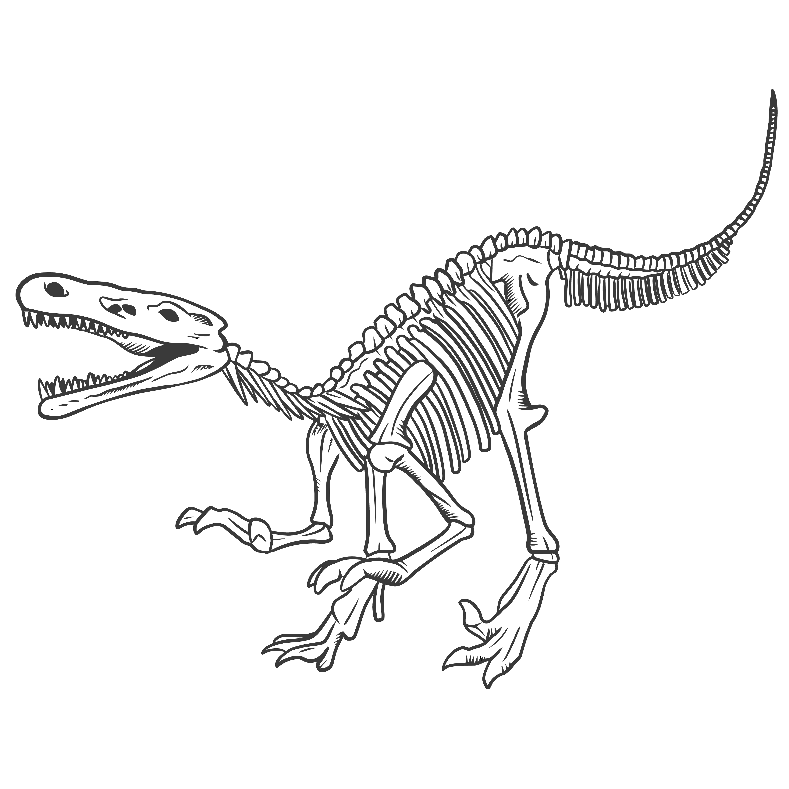

What are dinosaurs
Dinosaurs are a group of reptiles that dominated the land for over 140 million years. They evolved diverse shapes and sizes, from the fearsome giant Spinosaurus to the chicken-sized Microraptor
What is a fossil?
Dinosaur trace fossils are records of the activity of a living dinosaur. Most dinosaur trace fossils are footprints. Dinosaur tracks and body fossils are not usually found preserved in the same rocks,there are some exceptions
How dinosaurs died
Sixty-six million years ago, dinosaurs had the ultimate bad day. With a devastating asteroid impact, a reign that had lasted 180 million years was abruptly ended. Prof Paul Barrett, a dinosaur researcher at the Museum